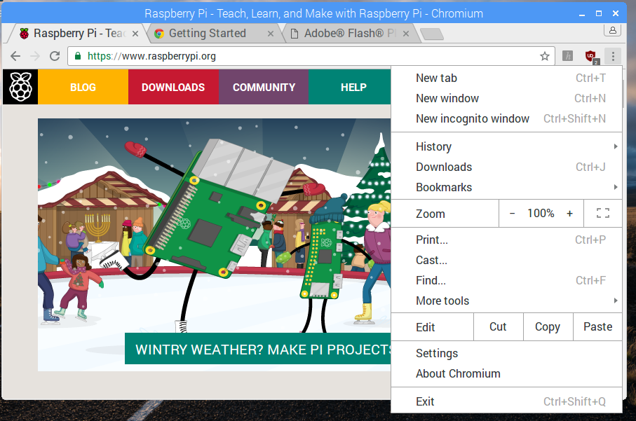

dies und das
Wie man den Raspberry bedient
Den Raspberry Pi starten
Wenn der Raspberry eingeschlatet wird startet ein Programm das einem hilft den Raspbery Pi zu benutzen. Dieses Programm wird Betriebssystem genannt. Das Betriebssystem des Raspberry Pi heisst Raspbian.
Wie man Menues benutzt um Programme zu starten
Wenn das Betriebssystem Raspian gestartet ist kann man den Raspberry Pi mitder Maus bedienen. Oder noch besser mit dem Trackpad neben der Tastatur. Man schiebt den Finger ueber das Trackpad und bewegt so den Mauszeiger. Die Tasten unten auf dem Trackpad kann man benutzen um Aktionen auszuloesen, wie zum Beispiel ein Menue oeffnen.
Die einfachste Moeglichkeit den Raspberry zu benutzen ist Probramme mit dem Programm-Menue zu starten. Das Menue ist oben am Bildschirm in der linken Ecke.
Wie man den Raspberry Pi wieder ausschaltet.
Es ist wichtig den Raspberry Pi nicht einfach auszuschalten. Man kann damit moeglicherweis unordnung auf der Speicherkarte schaffen und das naechste mal wenn man den Raspberry Pi starten will koennen Probleme auftreten. Um das zu verhindern soll man den Raspberry Pi immer mit einem Menue ausschalten.
Also man bewegt den Mauszeiger zum Programm-Menue in der linken oberen Ecke und klickt mit der linken Maustaste. Danach bewegt man den Mauszeiger herunter auf XXXXX(Leave?) dort klick man wieder und waehlt ZZZZZZ(shutdown) aus.
In Englisch wird das ausschalten eines Computers auch Shutdown genannt.
Wie man im Internet surft
Das Betriebssystem Raspbian kommt mit einem Programm um im internet Seiten anzuschauen. Dies wird auch oft im internet surfen genannt. Das programm zum surfen koennte ja jetzt sinnvollerweise z.B. Surfer heissen. Tut es aber nicht. Es heisst Browser. Das ist Englisch und bedeutet stoebern.
Wenn man jetzt will kann man auch sagen man browsed im Internet.
Wie auch immer. So geht es.
Zuerst startet man den Browser im Programm-Menue.
Dann waehlt man eine Internet-Seite aus die man lesen will.
Es gibt jetzt zei Moeglichkkeiten: * man kann die Addresse einfach eintippen * Man kann sich Lesezeichen anlegen

Wie man Mail benutzt
Wie man mit Dateien umgeht
Das Terminal Eingabefenster
Wie man Scratch benutzt um tolle eigene Programme zu entwerfen
Beispiel: Wir entwickeln ein tolles einfaches Spiel schreibt (Pong)
Wie man Pong in Scratch entwickelt
Den Raspberry Pi benutzen um Dinge zu steuern
Lexicon
Case Shutdown